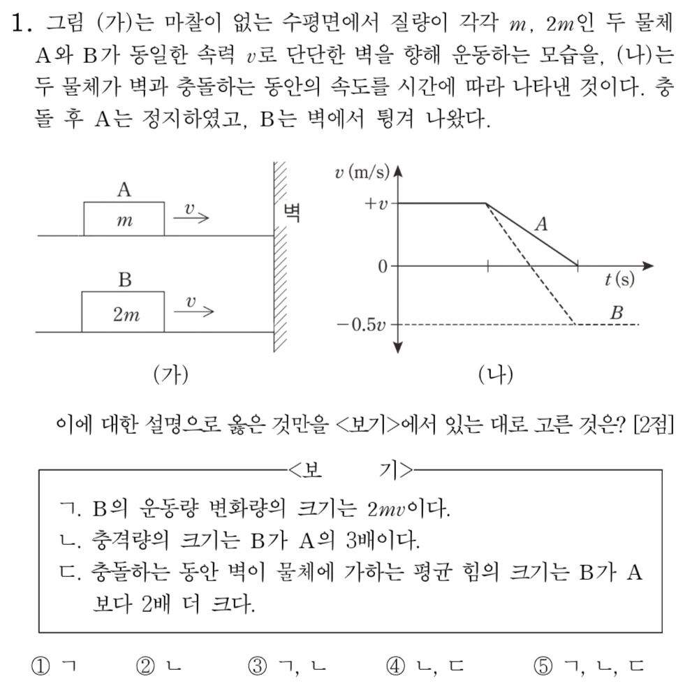

🧭 수능의 나침반 : 충돌과 운동량 변화량
물체의 충돌 과정에서 작용-반작용에 의한 충격량의 크기는 서로 같으며, 충격량은 운동량의 변화량과 같다는 물리적 기본 원리를 그래프와 함께 해석하는 능력을 평가합니다.
실전 대비 핵심 문항 분석
자료 변환 및 해석
[출처] 갓통과 자체 제작 문항
💡 갓쌤의 접근법
충돌 전후의 속도 변화량(Δv)에 질량을 곱해 각 물체의 운동량 변화량(충격량)을 먼저 구하세요. 충격량이 같을 때 충돌 시간(Δt)이 길어지면 평균 힘(F=I/Δt)이 줄어듭니다.
